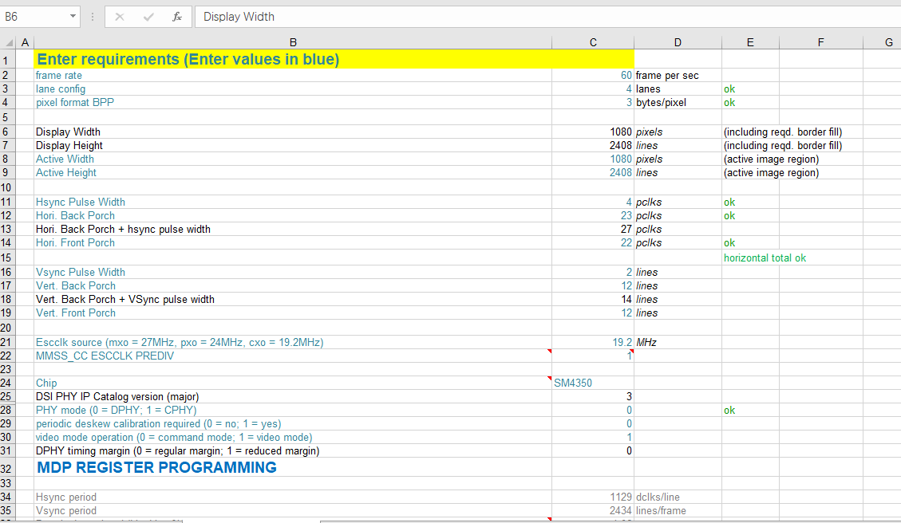
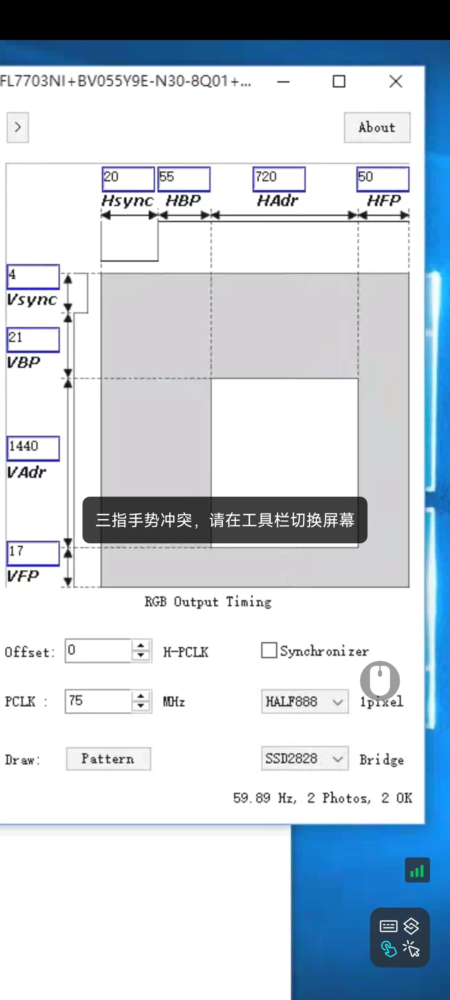

mipi clk计算方式¶
mipi 屏的传输时钟频率 CLKN,CLKP = (屏幕分辨率width+hsync+hfp+hbp)(屏幕分辨率高height+vsync+vfp+vbp) 帧率 * rgb显示数据宽度 / lane_num / 2
主要参数是,屏幕分辨率,横向竖向脉冲宽度,屏幕横竖前后肩参数
举例¶

width = 1080
hsync = Hsync Pulse Width = 4
hfp = Horizontal Front Porch = 22
hbp = Horizontal Back Porch = 23
height = 2408
vsync = Vertical Pulse Width = 2
vfp = Vertical Front Porch = 12
vbp = Vertical Back Porch = 12
frame rate = 帧率 = 60
rgb显示数据宽度 = pixel format BPP = 3byte * 8bit = 24
lane_num = lane config = 4
clkN,clkP = (1080+4+23+22) * (2408+2+12+12) * 60 * 24 / 4 / 2 = 1129 * 2434 * 60 * 24 / 4 / 2 = 494,637,480 / 1000,000 = 494 Mhz
720x1440-5.5英寸-A920 Pro白色液晶显示模块-KTD-HBP55794BTTW-V0-不带摄像头孔-BOE+FL7703I+CF1133-科莱¶

width = 720
hsync = 20
hbp = 55
hfp = 50
height = 1440
vsync = 4
vbp = 21
vfp = 17
rgb = HALF888 = 24bit
clk = (720+20+55+50)*(1440+4+21+17)6024/4/2 = 845 * 1482 * 60 * 24 / 4 / 2 = 225.4122Mhz